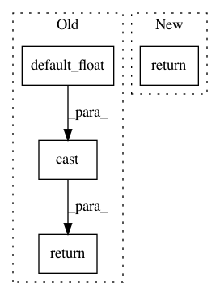

516f97c543f0816677fd00ec24b47f31f2618f67,gpflow/kernels/convolutional.py,Convolutional,get_patches,#Convolutional#Any#,37
Before Change
"VALID",
)
shp = tf.shape(patches) // img x out_rows x out_cols
return tf.cast(
tf.reshape(patches, [tf.shape(X)[0], self.colour_channels * shp[1] * shp[2], shp[3]]),
default_float(),
)
def K(self, X, X2=None):
Xp = self.get_patches(X) // [N, P, patch_len]
Xp2 = Xp if X2 is None else self.get_patches(X2)
After Change
reshaped_patches = tf.reshape(
patches, [num_data, self.colour_channels * shp[1] * shp[2], shp[3]]
)
return to_default_float(reshaped_patches)
def K(self, X, X2=None):
Xp = self.get_patches(X) // [N, P, patch_len]
Xp2 = Xp if X2 is None else self.get_patches(X2)
In pattern: SUPERPATTERN
Frequency: 3
Non-data size: 4
Instances
Project Name: GPflow/GPflow
Commit Name: 516f97c543f0816677fd00ec24b47f31f2618f67
Time: 2020-03-16
Author: st--@users.noreply.github.com
File Name: gpflow/kernels/convolutional.py
Class Name: Convolutional
Method Name: get_patches
Project Name: GPflow/GPflow
Commit Name: bd1e9c04b48dd5ccca9619d5eaa2595a358bdb08
Time: 2020-01-31
Author: st--@users.noreply.github.com
File Name: gpflow/kernels/misc.py
Class Name: ArcCosine
Method Name: K_diag
Project Name: GPflow/GPflow
Commit Name: 9961eabcc614e6cf883232d4e6fca0131dd0b492
Time: 2019-03-18
Author: sergio.diaz@prowler.io
File Name: unsorted_tests/test_quadrature.py
Class Name:
Method Name: cast